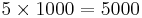

Scripting the Trainable Weka Segmentation
Scripting is one of the reasons Fiji is so powerful, and the Trainable Weka Segmentation library (that includes the Trainable Weka Segmentation plugin) is one of the best examples for scriptable Fiji components.
Contents
Getting started
The first thing you need to start scripting the Trainable Weka Segmentation is to know which methods you can use. For that, please have a look at the API of the Trainable Weka Segmentation library, which is available here.
Let's go through the basic commands with examples written in Beanshell:
Initialization
In order to include all the library methods, the easiest (but not elegant) way of doing it is importing the whole library:
import trainableSegmentation.*;
Now we are ready to play. We can open our input image and assign it to a WekaSegmentation object or segmentator:
// input train image input = IJ.openImage( "input-grayscale-or-color-image.tif" ); // create Weka Segmentation object segmentator = new WekaSegmentation( input );
As it is now, the segmentator has default parameters and default classifier. That means that it will use the same features that are set by default in the Trainable Weka Segmentation plugin, 2 classes (named "class 1" and "class 2") and a random forest classifier with 200 trees and 2 random features per node. If we are fine with that, we can now add some labels for our training data and train the classifier based on them.
Adding training samples
There are different ways of adding labels to our data:
1) we can add any type of ROI to any of the existing classes using "addExample":
// add pixels to first class (0) from ROI in slice # 1 segmentator.addExample( 0, new Roi( 10, 10, 50, 50 ), 1 ); // add pixels to second class (1) from ROI in slice # 1 segmentator.addExample( 1, new Roi( 400, 400, 30, 30 ), 1 );
2) add the labels from a binary image, where white pixels belong to one class and black pixels belong to the other class. There are a few methods to do this, for example:
// open binary label image labels = IJ.openImage( "binary-labels.tif" ); // for the first slice, add white pixels as labels for class 2 and // black pixels as labels for class 1 segmentator.addBinaryData( labels, 0, "class 2", "class 1" );
3) You can also add samples from a new input image and its corresponding labels:
// open new input image input2 = IJ.openImage( "input-image-2.tif" ); // open corresponding binary label image labels2 = IJ.openImage( "binary-labels-2.tif" ); // for all slices in input2, add white pixels as labels for class 2 and // black pixels as labels for class 1 segmentator.addBinaryData( input2, labels2, "class 2", "class 1" );
4) If you want to balance the number of samples for each class you can do it in a similar way using this other method:
numSamples = 1000; // for all slices in input2, add 1000 white pixels as labels for class 2 and // 1000 black pixels as labels for class 1 segmentator.addRandomBalancedBinaryData( input2, labels2, "class 2", "class 1" , numSamples);
5) You can use all methods available in the API to add labels from a binary image in many differente ways. Please, have a look at them and decided which one fits better your needs.
Training classifier
Once we have training samples for both classes, we are ready to train the classifier of our segmentator:
segmentator.trainClassifier();
Applying classifier (getting results)
Once the classifier is trained (it will be displayed in the Log window), we can apply it to the entire training image and obtain a result in the form of a labeled image or a probability map for each class:
// apply classifier to current training image and get label result // (set parameter to true to get probabilities) segmentator.applyClassifier( false ); // get result (float image) result = segmentator.getClassifiedImage();
Of course, we might be interested on applying the trained classifier to a complete new 2D image or stack. In that case we use:
// open test image testImage = IJ.openImage( "test-image.tif" ); // get result (labels float image) result = segmentator.applyClassifier( testImage );
Use same label colors as in the GUI
If you like the lookup table used in the plugin GUI, you can set it to your result labels programmatically as well:
import trainableSegmentation.utils.Utils; // apply classifier and get results as labels (same as before) result = segmentator.applyClassifier( image, 0, false ); // assign same LUT as in GUI result.setLut( Utils.getGoldenAngleLUT() );
Save/Load operations
If the classifier you trained is good enough for your purposes, you may want to save it into a file:
// save classifier into a file (.model) segmentator.saveClassifier( "my-cool-trained-classifier.model" );
... and load it later in another script to apply it on new images:
// load classifier from file segmentator.loadClassifier( "my-cool-trained-classifier.model" );
You may also want to save the training data into a file you can open later in WEKA:
// save data into a ARFF file segmentator.saveData( "my-traces-data.arff" );
... or load a file with traces information into the segmentator to use it as part of the training:
// load training data from ARFF file segmentator.loadTrainingData( "my-traces-data.arff" );
Testing mode
Since Trainable Weka Segmentation v3.2.8, a classifier can be loaded into a WekaSegmentation object created without a training image, that is, for testing purposes only:
// create testing segmentator segmentator = new WekaSegmentation(); // load classifier from file segmentator.loadClassifier( "my-cool-trained-classifier.model" );
And the apply it to any test image as we did above (see "Applying classifier" section).
Setting the classifier
By default, the classifier is a multi-threaded implementation of a random forest. You can change it to any other classifier available in the WEKA API. For example, we can use SMO:
import weka.classifiers.functions.SMO; // create new SMO classifier (default parameters) classifier = new SMO(); // assign classifier to segmentator segmentator.setClassifier( classifier );
We might also want to use the default random forest but tune its parameters. In that case, we can write something like this:
import hr.irb.fastRandomForest.FastRandomForest; // create random forest classifier rf = new FastRandomForest(); // set number of trees in the forest rf.setNumTrees( 100 ); // set number of features per tree (0 for automatic selection) rf.setNumFeatures( 0 ); // set random seed rf.setSeed( (new java.util.Random()).nextInt() ); // set classifier segmentator.setClassifier( rf );
Example: apply classifier to all images in folder
Very frequently we might end up having to process a large number of images using a classifier that we interactively trained with the GUI of the Trainable Weka Segmentation plugin. The following Beanshell script shows how to load a classifier from file, apply it to all images contained in a folder and save the results in another folder defined by the user:
#@ File(label="Input directory", description="Select the directory with input images", style="directory") inputDir
#@ File(label="Output directory", description="Select the output directory", style="directory") outputDir
#@ File(label="Weka model", description="Select the Weka model to apply") modelPath
#@ String(label="Result mode",choices={"Labels","Probabilities"}) resultMode
import trainableSegmentation.WekaSegmentation;
import trainableSegmentation.utils.Utils;
import ij.io.FileSaver;
import ij.IJ;
import ij.ImagePlus;
// starting time
startTime = System.currentTimeMillis();
// caculate probabilities?
getProbs = resultMode.equals( "Probabilities" );
// create segmentator
segmentator = new WekaSegmentation();
// load classifier
segmentator.loadClassifier( modelPath.getCanonicalPath() );
// get list of input images
listOfFiles = inputDir.listFiles();
for ( i = 0; i < listOfFiles.length; i++ )
{
// process only files (do not go into sub-folders)
if( listOfFiles[ i ].isFile() )
{
// try to read file as image
image = IJ.openImage( listOfFiles[i].getCanonicalPath() );
if( image != null )
{
// apply classifier and get results (0 indicates number of threads is auto-detected)
result = segmentator.applyClassifier( image, 0, getProbs );
if( !getProbs )
// assign same LUT as in GUI
result.setLut( Utils.getGoldenAngleLUT() );
// save result as TIFF in output folder
outputFileName = listOfFiles[ i ].getName().replaceFirst("[.][^.]+$", "") + ".tif";
new FileSaver( result ).saveAsTiff( outputDir.getPath() + File.separator + outputFileName );
// force garbage collection (important for large images)
result = null;
image = null;
System.gc();
}
}
}
// print elapsed time
estimatedTime = System.currentTimeMillis() - startTime;
IJ.log( "** Finished processing folder in " + estimatedTime + " ms **" );
Example: apply classifier to all images in folder by tiles
In some cases, we may have to apply a saved classifier to very large images, which together with a large number of image features may fill the RAM of our machine. To prevent running into out-of-memory exceptions, the following Beanshell script shows how to load a classifier from file, apply it to all images contained in a folder by subdividing them into smaller pieces, and save the results in another folder defined by the user:
#@ File(label="Input directory", description="Select the directory with input images", style="directory") inputDir
#@ File(label="Output directory", description="Select the output directory", style="directory") outputDir
#@ File(label="Weka model", description="Select the Weka model to apply") modelPath
#@ String(label="Result mode",choices={"Labels","Probabilities"}) resultMode
#@ Integer(label="Number of tiles in X:", description="Number of image subdivisions in the X direction", value=3) xTiles
#@ Integer(label="Number of tiles in Y:", description="Number of image subdivisions in the Y direction", value=3) yTiles
#@ Integer(label="Number of tiles in Z (set to 0 for 2D processing):", description="Number of image subdivisions in the Z direction (ignored when using 2D images)", value=3) zTiles
import trainableSegmentation.WekaSegmentation;
import trainableSegmentation.utils.Utils;
import ij.io.FileSaver;
import ij.IJ;
import ij.ImagePlus;
// starting time
startTime = System.currentTimeMillis();
// caculate probabilities?
getProbs = resultMode.equals( "Probabilities" );
// create segmentator
segmentator = new WekaSegmentation( zTiles > 0 );
// load classifier
segmentator.loadClassifier( modelPath.getCanonicalPath() );
// get list of input images
listOfFiles = inputDir.listFiles();
for ( i = 0; i < listOfFiles.length; i++ )
{
// process only files (do not go into sub-folders)
if( listOfFiles[ i ].isFile() )
{
// try to read file as image
image = IJ.openImage( listOfFiles[i].getCanonicalPath() );
if( image != null )
{
tilesPerDim = new int[ 2 ];
if( image.getNSlices() > 1 )
{
tilesPerDim = new int[ 3 ];
tilesPerDim[ 2 ] = zTiles;
}
tilesPerDim[ 0 ] = xTiles;
tilesPerDim[ 1 ] = yTiles;
// apply classifier and get results (0 indicates number of threads is auto-detected)
result = segmentator.applyClassifier( image, tilesPerDim, 0, getProbs );
if( !getProbs )
// assign same LUT as in GUI
result.setLut( Utils.getGoldenAngleLUT() );
// save result as TIFF in output folder
outputFileName = listOfFiles[ i ].getName().replaceFirst("[.][^.]+$", "") + ".tif";
new FileSaver( result ).saveAsTiff( outputDir.getPath() + File.separator + outputFileName );
// force garbage collection (important for large images)
result = null;
image = null;
System.gc();
}
}
}
// print elapsed time
estimatedTime = System.currentTimeMillis() - startTime;
IJ.log( "** Finished processing folder in " + estimatedTime + " ms **" );
System.gc();
Example: define your own features
Although Trainable Segmentation provides a large set of predefined image features, it might happen that you need to define your own features for a specific problem. You can do that with a simple set of instructions. Here is a little Beanshell script that makes two features from the Clown example and uses them to train a classifier (see the inline comments for more information):
import ij.IJ;
import ij.ImagePlus;
import ij.ImageStack;
import ij.gui.Roi;
import ij.gui.PolygonRoi;
import ij.plugin.Duplicator;
import ij.process.FloatPolygon;
import ij.process.StackConverter;
import trainableSegmentation.FeatureStack;
import trainableSegmentation.FeatureStackArray;
import trainableSegmentation.WekaSegmentation;
import trainableSegmentation.utils.Utils;
image = IJ.openImage(System.getProperty("ij.dir") + "/samples/clown.jpg");
if (image.getStackSize() > 1)
new StackConverter(image).convertToGray32();
else
image.setProcessor(image.getProcessor().convertToFloat());
duplicator = new Duplicator();
// process the image into different stacks, one per feature:
smoothed = duplicator.run(image);
IJ.run(smoothed, "Gaussian Blur...", "radius=20");
medianed = duplicator.run(image);
IJ.run(medianed, "Median...", "radius=10");
// add new feature here (1/2)
// the FeatureStackArray contains a FeatureStack for every slice in our original image
featuresArray = new FeatureStackArray(image.getStackSize());
// turn the list of stacks into FeatureStack instances, one per original
// slice. Each FeatureStack contains exactly one slice per feature.
for ( slice = 1; slice <= image.getStackSize(); slice++) {
stack = new ImageStack(image.getWidth(), image.getHeight());
stack.addSlice("smoothed", smoothed.getStack().getProcessor(slice));
stack.addSlice("medianed", medianed.getStack().getProcessor(slice));
// add new feature here (2/2) and do not forget to add it with a
// unique slice label!
// create empty feature stack
features = new FeatureStack( stack.getWidth(), stack.getHeight(), false );
// set my features to the feature stack
features.setStack( stack );
// put my feature stack into the array
featuresArray.set(features, slice - 1);
featuresArray.setEnabledFeatures(features.getEnabledFeatures());
}
wekaSegmentation = new WekaSegmentation(image);
wekaSegmentation.setFeatureStackArray(featuresArray);
// set examples for class 1 (= foreground) and 0 (= background))
void addExample(int classNum, int slice, float[] xArray, float[] yArray) {
polygon = new FloatPolygon(xArray, yArray);
roi = new PolygonRoi(polygon, Roi.FREELINE);
IJ.log("roi: " + roi);
wekaSegmentation.addExample(classNum, roi, slice);
}
/*
* generate these with the macro:
getSelectionCoordinates(x, y);
print('new float [] {'); Array.print(x); print('},");
print('new float [] {'); Array.print(y); print('}");
*/
addExample(1, 1,
new float [] { 82,85,85,86,87,87,87,88,88,88,88,88,88,88,88,86,86,84,83,82,81,
80,80,78,76,75,74,74,73,72,71,70,70,68,65,63,62,60,58,57,55,55,
54,53,51,50,49,49,49,51,52,53,54,55,55,56,56},
new float [] { 141,137,136,134,133,132,130,129,128,127,126,125,124,123,122,121,
120,119,118,118,116,116,115,115,114,114,113,112,111,111,111,111,
110,110,110,110,111,112,113,114,114,115,116,117,118,119,119,120,
121,123,125,126,128,128,129,129,130
} );
addExample(0, 1,
new float [] { 167,165,163,161,158,157,157,157,157,157,157,157,158 },
new float [] { 30,29,29,29,29,29,28,26,25,24,23,22,21 }
);
// train classifier
if (!wekaSegmentation.trainClassifier())
throw new RuntimeException("Uh oh! No training today.");
// apply classifier to image
output = wekaSegmentation.applyClassifier(image);
// set same LUT as in the plugin GUI
output.setLut( Utils.getGoldenAngleLUT() );
output.show();
Example: define training samples with binary labels
Here is a simple script in Beanshell doing the following:
- It takes one image (2D or stack) as training input image and a binary image as the corresponding labels.
- Train a classifier (in this case a random forest, but it can be changed) based on randomly selected pixels of the training image. The number of samples (pixels to use for training) is also a parameter, and it will be the same for each class.
- Apply the trained classifier to a test image (2D or stack).
#@ ImagePlus(label="Training image", description="Stack or a single 2D image") image
#@ ImagePlus(label="Label image", description="Image of same size as training image containing binary class labels") labels
#@ ImagePlus(label="Test image", description="Stack or a single 2D image") testImage
#@ Integer(label="Num. of samples", description="Number of training samples per class and slice",value=2000) nSamplesToUse
#@OUTPUT ImagePlus prob
import ij.IJ;
import trainableSegmentation.WekaSegmentation;
import hr.irb.fastRandomForest.FastRandomForest;
// starting time
startTime = System.currentTimeMillis();
// create Weka segmentator
seg = new WekaSegmentation(image);
// Classifier
// In this case we use a Fast Random Forest
rf = new FastRandomForest();
// Number of trees in the forest
rf.setNumTrees(100);
// Number of features per tree
rf.setNumFeatures(0);
// Seed
rf.setSeed( (new java.util.Random()).nextInt() );
// set classifier
seg.setClassifier(rf);
// Parameters
// membrane patch size
seg.setMembranePatchSize(11);
// maximum filter radius
seg.setMaximumSigma(16.0f);
// Selected attributes (image features)
enableFeatures = new boolean[]{
true, /* Gaussian_blur */
true, /* Sobel_filter */
true, /* Hessian */
true, /* Difference_of_gaussians */
true, /* Membrane_projections */
false, /* Variance */
false, /* Mean */
false, /* Minimum */
false, /* Maximum */
false, /* Median */
false, /* Anisotropic_diffusion */
false, /* Bilateral */
false, /* Lipschitz */
false, /* Kuwahara */
false, /* Gabor */
false, /* Derivatives */
false, /* Laplacian */
false, /* Structure */
false, /* Entropy */
false /* Neighbors */
};
// Enable features in the segmentator
seg.setEnabledFeatures( enableFeatures );
// Add labeled samples in a balanced and random way
seg.addRandomBalancedBinaryData(image, labels, "class 2", "class 1", nSamplesToUse);
// Train classifier
seg.trainClassifier();
// Apply trained classifier to test image and get probabilities
prob = seg.applyClassifier( testImage, 0, true );
// Set output title
prob.setTitle( "Probability maps of " + testImage.getTitle() );
// Print elapsed time
estimatedTime = System.currentTimeMillis() - startTime;
IJ.log( "** Finished script in " + estimatedTime + " ms **" );
Example: color-based segmentation using clustering
The following Beanshell script shows how to segment a 2D color image or stack in an automatic fashion using the CIELab color space and two possible clustering schemes: k-means and expectation maximization (note: if you do not have Weka's ClassificationViaClustering classifier installed, check how to install new classifiers via Weka's package manager).
#@ ImagePlus image
#@ int(label="Num. of clusters", description="Number of expected clusters", value=5) numClusters
#@ int(label="Num. of samples", description="Number of training samples per cluster", value=1000) numSamples
#@ String(label="Clustering method",choices={"SimpleKMeans","EM"}) clusteringChoice
#@OUTPUT ImagePlus output
import ij.IJ;
import ij.ImageStack;
import ij.ImagePlus;
import ij.process.ColorSpaceConverter;
import ij.process.ByteProcessor;
import trainableSegmentation.FeatureStack;
import trainableSegmentation.FeatureStackArray;
import trainableSegmentation.WekaSegmentation;
import weka.clusterers.EM;
import weka.clusterers.SimpleKMeans;
import weka.core.WekaPackageManager;
import weka.core.WekaPackageClassLoaderManager;
// Load WEKA local learning schemes (from user installed packages)
WekaPackageManager.loadPackages( false );
if( image.getType() != ImagePlus.COLOR_RGB )
{
IJ.error( "Color segmentation by clustering",
"Error: input image needs to be a color 2D image or stack!" );
return null;
}
// Color space converter to pass from RGB to Lab
converter = new ColorSpaceConverter();
// Initialize segmentator with the same number of classes as
// expected number of clusters
wekaSegmentation = new WekaSegmentation( image );
for( i=2; i<numClusters; i++ )
wekaSegmentation.addClass();
// Initialize array of feature stacks (one per slice)
featuresArray = new FeatureStackArray( image.getStackSize() );
for ( slice = 1; slice <= image.getStackSize(); slice++ )
{
// RGB to Lab conversion
stack = new ImageStack( image.getWidth(), image.getHeight() );
lab = converter.RGBToLab( new ImagePlus( "RGB", image.getStack().getProcessor( slice ) ));
stack.addSlice("a", lab.getStack().getProcessor( 2 ) );
stack.addSlice("b", lab.getStack().getProcessor( 3 ) );
// Create empty feature stack
features = new FeatureStack( stack.getWidth(), stack.getHeight(), false );
// Set a and b features to the feature stack
features.setStack( stack );
// Put feature stack into the array
featuresArray.set(features, slice - 1);
// Create uniform labels of each cluster/class.
// (this information is not used by the clusterer but
// needed by WEKA).
pixels = new byte[ image.getWidth() * image.getHeight() ];
for( i=0; i<pixels.length; i++)
pixels [ i ] = (byte) ( i % numClusters + 1 );
labels = new ByteProcessor( image.getWidth(), image.getHeight(), pixels );
// Add randomly chosen training data in a balanced way
wekaSegmentation.addRandomBalancedLabeledData( labels, features, numSamples );
}
// Set ClassificationViaClustering classifier to perform clustering
classifier = WekaPackageClassLoaderManager.objectForName( "weka.classifiers.meta.ClassificationViaClustering" );
// Set clusterer as selected by user
clusterer = null;
if( clusteringChoice.equals( "SimpleKMeans" ) )
clusterer = new SimpleKMeans();
else
clusterer = new EM();
clusterer.setSeed( (new Random()).nextInt() );
clusterer.setNumClusters( numClusters );
classifier.setClusterer( clusterer );
wekaSegmentation.setClassifier( classifier );
// Train classifier and therefore clusterer
if (!wekaSegmentation.trainClassifier())
throw new RuntimeException("Uh oh! No training today.");
// Apply classifier based on a,b features to whole image
wekaSegmentation.setFeatureStackArray( featuresArray );
output = wekaSegmentation.applyClassifier( image, featuresArray, 0, false );
output.setDisplayRange( 0, numClusters-1 );
This can be a very useful approach to segment images where the elements contain very distinct colors. Let's see an example using a public image of hematoxylin and eosin (H&E) stained lung tissue:
{kind=link}
Once the image is open, we can call the script and a dialog will pop up:
Here we can select the number of expected clusters, the number of samples per cluster used for training and the clustering method. The default values of 5 clusters, 1000 samples and “SimpleKMeans” involve that 5000 pixels will be used for training () a k-means classifier and the resulting image will be an integer image containing labels in the range of [0-4].
This would be a possible output of the script with 3 clusters, 2000 samples and “SimpleKMeans”:
The actual label values may vary between different executions of the same clustering due to its random seed initialization. In any case, the blood cells (originally in red), the cell nuclei (in blue-purple), other cell bodies (in pink) and the extracellular space get usually a very reasonable segmentation.